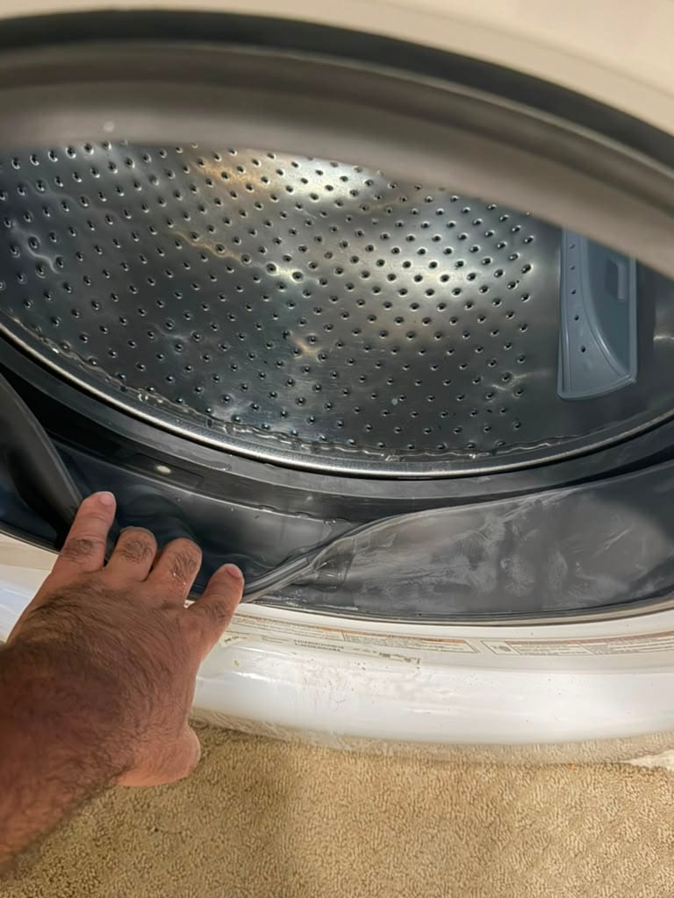
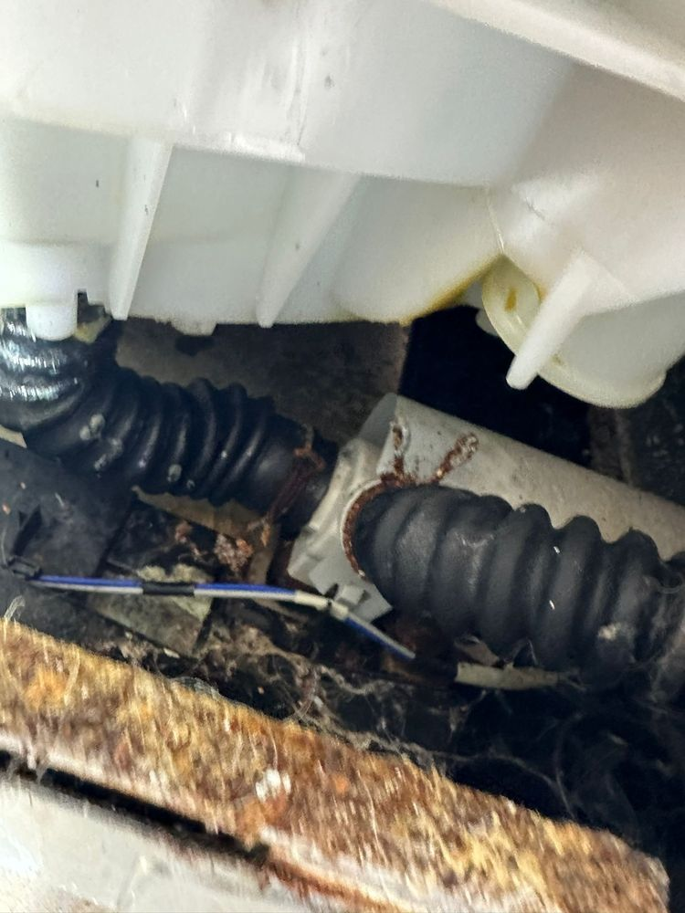
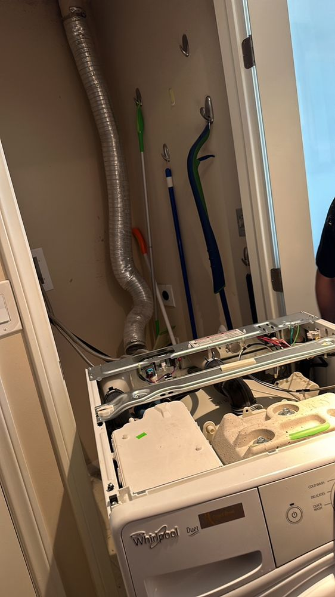
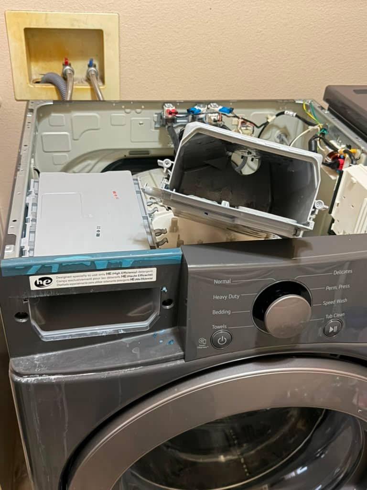
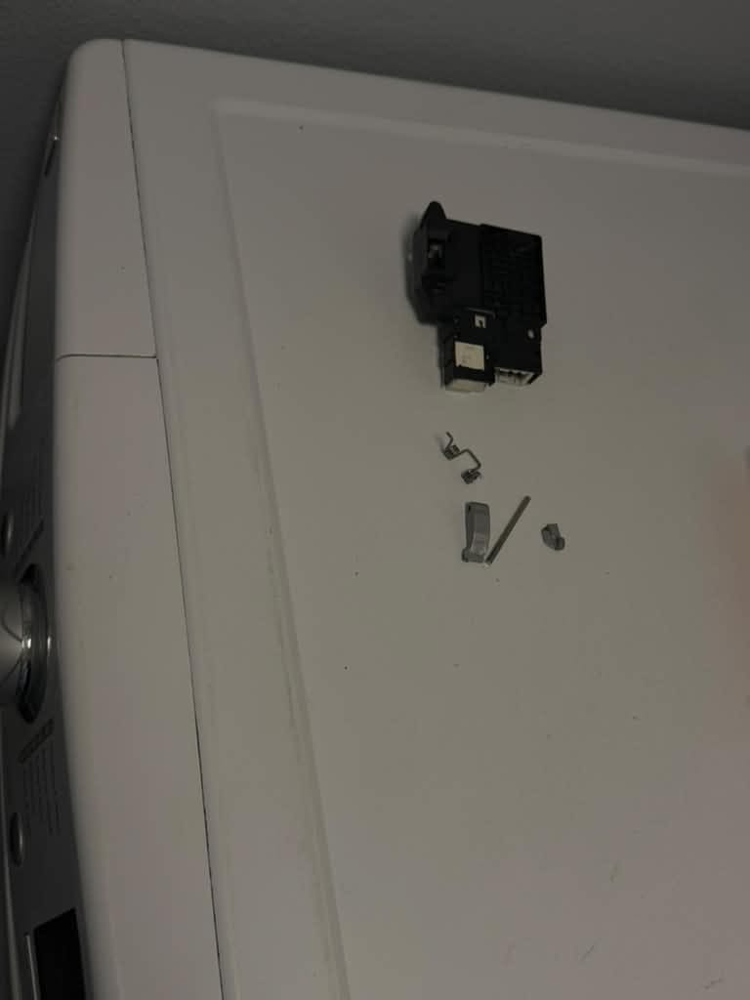

Stanton, CA
Maytag Lid Lock Replacement
Lid lock replaced on this Maytag top-load washer in Stanton.
Same-day service on all brands: front-load, top-load, and HE models. Licensed technicians on every job.
5.0 · 156 Google reviewsMon–Sat, 8am–7pm. You don't need to know which part failed; tell us what the washer is doing.
Family-owned since 2017 · Licensed, bonded & insured
Stanton, CA
Lid lock replaced on this Maytag top-load washer in Stanton.

Newport Beach, CA
Drain pump replaced on this LG front-load washer in Newport Beach.

Corona del Mar, CA
Maytag top-load washer photographed during a service call for a control-board problem in Corona del Mar.

Foothill Ranch, CA
This graphite LG front-load washer and dryer pair was photographed during a maintenance visit in Foothill Ranch.

Aliso Viejo, CA
A torn door boot on a Whirlpool Duet front-loader let water escape at the front of the machine. We fitted a new gasket so the drum seals against the door and the leaking stopped.

A close look at the shock absorber boots and suspension hardware inside a washer cabinet during an inspection.

The top panel removed from a Whirlpool Duet washer to reach the control board and wiring in a laundry closet.

Ladera Ranch, CA
An LG front-load washer opened up to reach a failed drain pump, top and control panel removed and tools laid out on the laundry room floor in Ladera Ranch.

Orange, CA
Detergent had hardened inside the dispenser housing on this LG front-loader in Orange, leaving blue residue down the drawer front. The old housing came out and a new assembly went in so detergent flushes into the drum again.

Mission Viejo, CA
This Samsung top-load washer in Mission Viejo shook violently every time it reached spin speed. It holds steady through a full spin cycle now.

Cypress, CA
The open door of this LG front-load washer in Cypress, with its door hook on the door frame after the door hook and door lock were replaced.

Cypress, CA
The old parts taken out of that LG washer in Cypress: the door lock assembly, a small spring, the door hook and its pin.

Beverly Hills, CA
The door gasket was replaced on this LG front-load washer in Beverly Hills. The photo shows a door gasket resting on top of the washer.
From our 156 verified 5-star Google reviews
We had an issue where our washing machine would not drain. AG came and was communicative about his timing. He diagnosed the problem, found the part and said he'd return the following day once he had the part. Again, he was communicating the second day and completed the job in one hour. He was prompt, efficient and helped get our washing machine up and running as quickly as possible for our busy family of 4. Thank you!!
A.G. arrived with the part my washing machine needed and replaced it very quickly. He was very courteous and professional.
Have used Appliance Repair in the past. AG is a 5-star technician. On time, polite. Offered a detailed description of the problem. For a 12-year-old washer the repair cost would far exceed in comparison to today's market value of a new washer. Appreciated the up-front honesty. At no charge he did a minor adjustment to prevent stagnant water accumulating in the soap dispenser thus eliminating the foul odor emitting in my washer. Have no problem calling AG in the future. It's reassuring to find a service with integrity that is honest up front. Thank you. D. Vanover
From your first call to a working washer: here's what to expect.
Request a RepairEstimates vary by brand, part availability, and diagnosis. Final quote is provided before repair. See full pricing guide
Our technicians diagnose and repair all washer failure modes, usually in a single visit.
We service all major brands and carry common parts on every truck to fix most washers same day.
Independent repair service. Not affiliated with or endorsed by these manufacturers; brand names and logos are trademarks of their owners.
Washers typically last 11–14 years. If your machine is under 10 years old, repair almost always makes financial sense; a new mid-range washer runs $700–$1,200, and installation adds another $100–$200. For machines past that age facing a major component failure (motor, drum bearing, control board), replacement may be the better call. Our appliance repair cost guide shows typical washer repair ranges across Orange County.
Our rule of thumb: If the repair cost is less than 50% of what a comparable new washer costs today, fix it. If the machine is over 10 years old and needs an expensive part, we'll tell you honestly, and help you decide.
Estimates vary by brand, part availability, and diagnosis. Final quote is provided before repair.
| Repair Type | Typical Range |
|---|---|
| Service call / diagnostic: Orange County market average (often credited toward repair) | $75 – $100 |
| Drain pump | $180 – $350 |
| Door lock / lid switch | $130 – $260 |
| Water inlet valve | $150 – $300 |
| Drive belt | $130 – $250 |
| Door boot seal (front-load) | $200 – $400 |
| Drive motor / motor control | $280 – $500 |
| Control board | $250 – $480 |
See the washer repair cost guide or our full appliance repair pricing guide for broader Orange County pricing context.
Universal Appliances Repair Group Inc. repairs front-load and top-load washers from all major brands across Orange County, California, with same-day service available. We diagnose spin, drain, leak, and noise problems on the first visit.
Our technicians serve Anaheim, Irvine, Huntington Beach, Santa Ana, Costa Mesa, Fullerton, Garden Grove, and nearby Orange County cities. Call (949) 629-5365 or book online to schedule a washer repair visit.
Still have a question? Call (949) 629-5365.
Same-day service available. Licensed technicians and a 90-day parts, 30-day labor warranty. We cover Anaheim, Irvine, Huntington Beach, Santa Ana, Costa Mesa, and 25+ more cities.